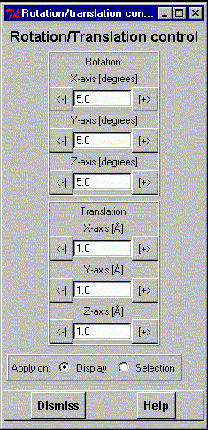

**************************************************************************
Rotate/translate control widget
Leif Laaksonen CSC 1996
**************************************************************************
Rotate and translation control widget. Clicking on - or + rotates or translates the display with the value (step) defined in the entry between the signs. The step can be changed by writing a new value into the entry space.
The new display will not be showed before the "Display" command is executed or the gOpenMol logo is pressed.
The operations (rotation/translation) will be applied either on the display or the selection. According to the "Apply on" radiobutton.

Line command: see
**************************************************************************
LUL/1996
**************************************************************************